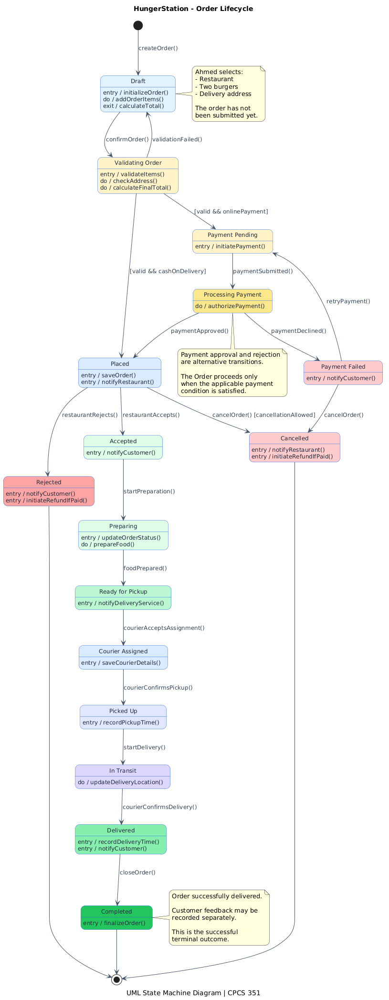
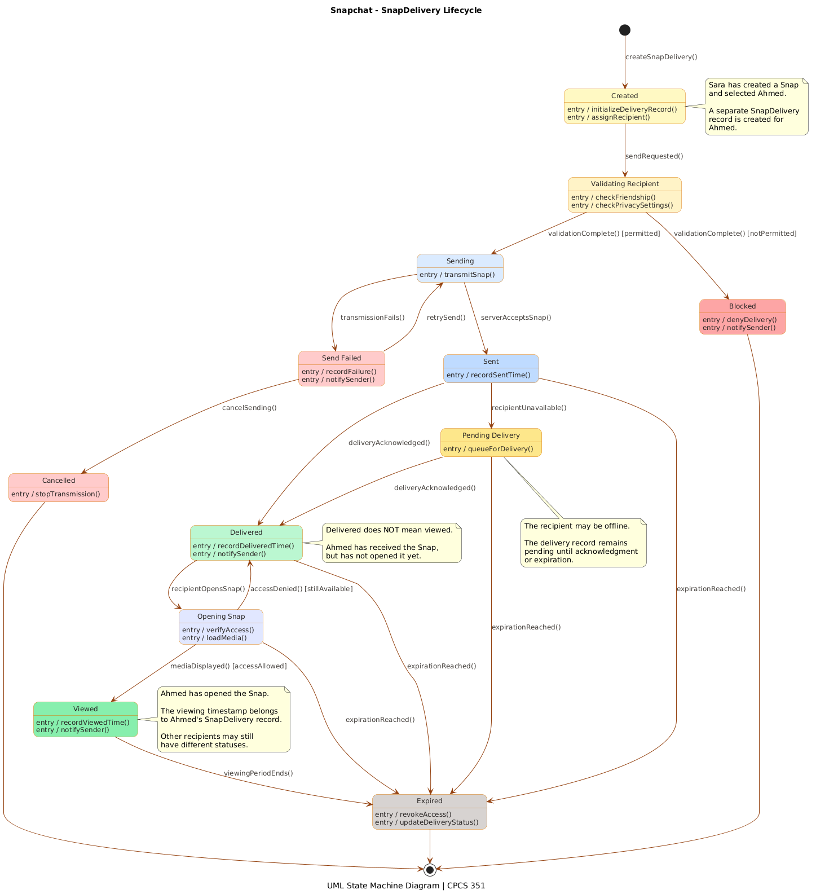

Real-World State Machine Case Studies
Trace one object's lifecycle through states, events, guarded transitions, and outcomes using HungerStation and Snapchat.
Identify the modeled object; distinguish a state from an event or action; interpret initial/final pseudostates, transition triggers, guards, entry/do/exit behaviors, and alternative terminal outcomes; relate state machines to sequence diagrams.
What changes over the lifetime of one object?
A UML state machine diagram describes the states of one modeled object and the events that cause transitions between them. Unlike a sequence diagram, it does not primarily describe message exchange among several objects.
event [guard] / effect. entry /, do /, and exit / denote state behaviors. Colors and annotations are visual aids, not formal UML semantics.Order Lifecycle — From Draft to Completion
Modeled object: Order. Ahmed chooses two burgers, confirms delivery details, pays online or chooses cash on delivery, and waits for the restaurant and courier to fulfill the order. The same Order object changes state as events occur.
Draft → Validating. Items, address and totals are checked.Placed; the restaurant may accept or reject.Preparing → Ready → Picked Up → In Transit → Delivered → Completed.

Read the diagram in five steps
- Initial state:
createOrder()starts the order inDraft. - Guarded transitions: a valid order follows either
[onlinePayment]or[cashOnDelivery]. - Alternative outcomes: payment failure permits retry or cancellation; the restaurant may reject the order.
- State behaviors:
entry / notifyCustomer()runs on entering a state;do / prepareFood()represents activity associated with preparation. - Termination:
Completed,Rejected, andCancelledlead to the final state.
| Current state | Event / condition | Next state |
|---|---|---|
| Draft | confirmOrder() | Validating Order |
| Validating Order | [valid && onlinePayment] | Payment Pending |
| Processing Payment | paymentApproved() | Placed |
| Placed | restaurantAccepts() | Accepted |
| Preparing | foodPrepared() | Ready for Pickup |
| In Transit | courierConfirmsDelivery() | Delivered |
paymentApproved() a transition trigger rather than a state? Should Completed be reached immediately after payment? Explain the business rule.SnapDelivery Lifecycle — From Created to Viewed or Expired
Modeled object: SnapDelivery, not the shared Snap. Sara sends a Snap to Ahmed. The system records this recipient's authorization, transmission, delivery, viewing and expiration independently from any other recipient.
Created → Validating Recipient, then proceed or block according to privacy permissions.Sending → Sent → Delivered, with retry and pending alternatives.Delivered → Opening → Viewed → Expired, subject to availability and access checks.

Read the diagram in five steps
- Object selection: one
SnapDeliveryrecord represents delivery to Ahmed, not the entire Snap. - Guards: validation allows sending only when recipient permissions are satisfied.
- Retry loop:
Send Failed → Sendingmodels another transmission attempt. - Distinct states:
Sent,Delivered, andViewedhave different meanings. - Terminal outcomes: the modeled delivery can become
Expired,Blocked, orCancelled.
| Current state | Event / condition | Next state |
|---|---|---|
| Created | sendRequested() | Validating Recipient |
| Validating Recipient | validationComplete() [permitted] | Sending |
| Sending | serverAcceptsSnap() | Sent |
| Sent | deliveryAcknowledged() | Delivered |
| Delivered | recipientOpensSnap() | Opening Snap |
| Opening Snap | mediaDisplayed() [accessAllowed] | Viewed |
viewedAt a property of each SnapDelivery rather than one shared timestamp on Snap?Same UML notation, different object lifecycles
| Aspect | HungerStation | Snapchat |
|---|---|---|
| Object | Order | SnapDelivery |
| Main states | Draft, Placed, Preparing, Delivered | Created, Sent, Delivered, Viewed |
| Guards | Validation, payment method, cancellation policy | Recipient permission, access availability |
| Failure path | Payment Failed, Rejected, Cancelled | Send Failed, Blocked, Cancelled |
| Primary concern | Order fulfillment consistency | Recipient-specific delivery and viewing |
courierConfirmsDelivery() or deliveryAcknowledged() and when. A state machine explains what that event does to the relevant object's state. Compare the two sequence-diagram case studies →Choose one object → identify meaningful states → identify events → add guarded transitions → model state behaviors → verify reachable outcomes. Do not confuse an event such as paymentApproved() with a state such as Placed.